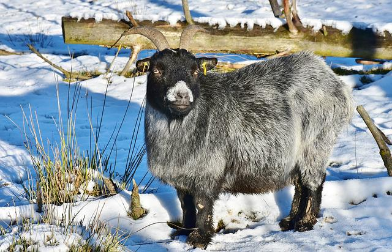
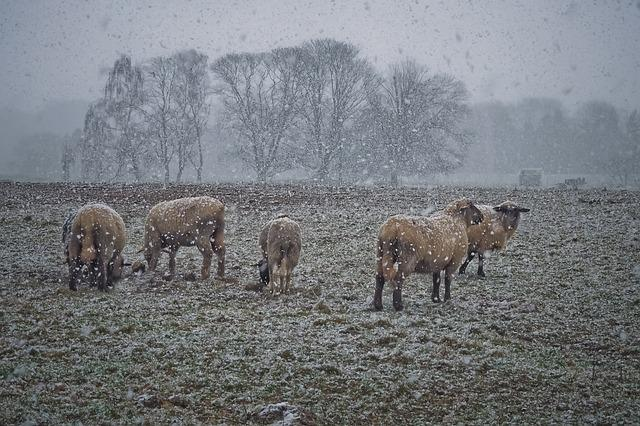

《冬牧场》
作者: 李娟
春天接羔，夏天催膘，秋天配种，冬天孕育。羊的一生是牧人的一年，牧人的一生呢？这绵延千里的家园，这些大地最隐秘微小的褶皱，这每一处最狭小脆弱的栖身之地……青春啊，财富啊，爱情啊，希望啊，全都默默无声。 ——李娟

2010年冬天，李娟跟随一家熟识的哈萨克牧民深入阿勒泰南部的冬季牧场、沙漠，度过了一段艰辛迥异的荒野生活。李娟是第一位描写哈萨克民族冬牧生活的汉族作家，她以饱含深情又不失节制的文字，呈现出阿尔泰最后一批“荒野主人”冬季转场时的独特生存景观。
这本书用细致而深情的笔触，记录下了哈萨克民族牧场的冬牧生活。打破了我们对游牧民族的固有印象，也带我们看到日常难以企及的景象：世界最深处的隐忍、沉默与寥廓。
这是一本阅读体验非常棒的书，也很适合在入夏时节读，感受《冬牧场》的凉爽。